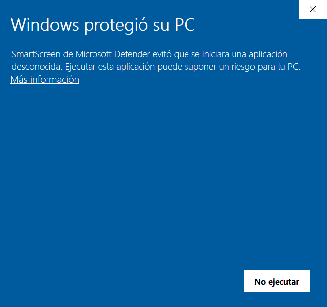
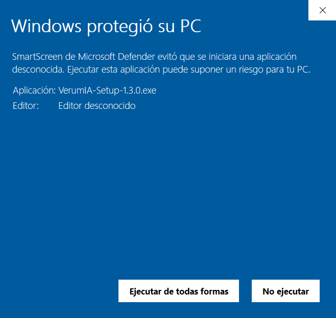
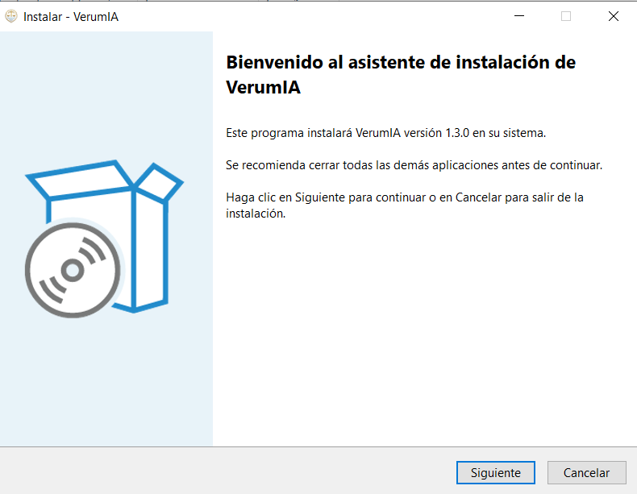
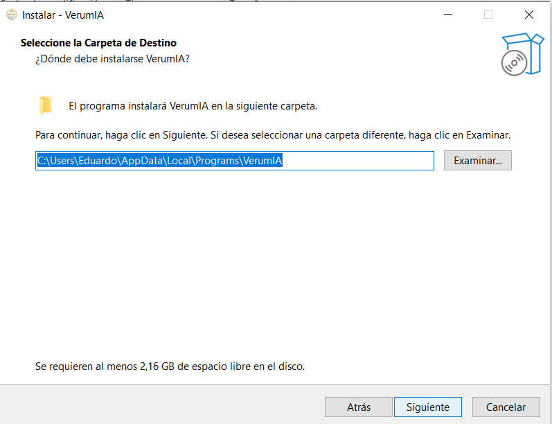
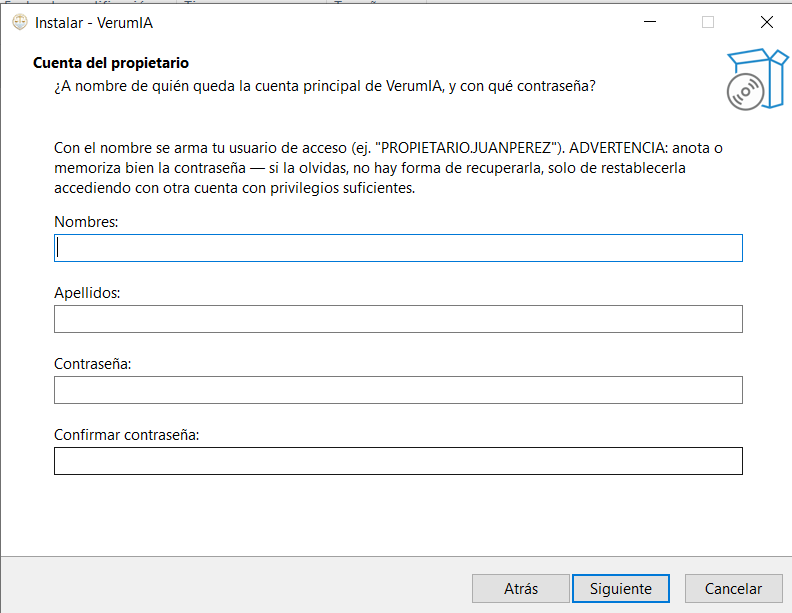
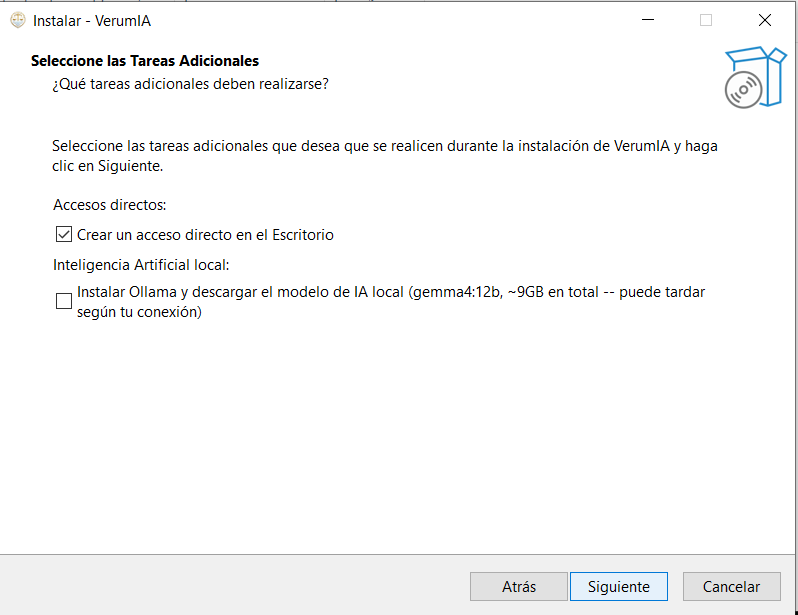
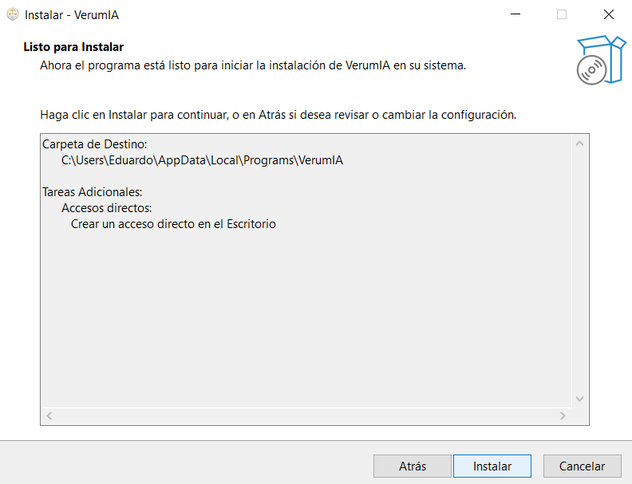
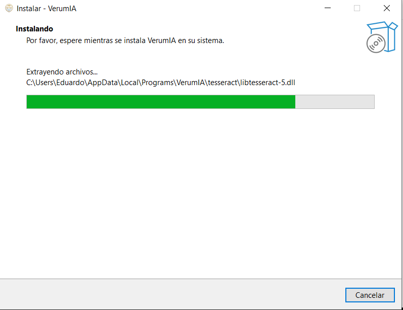
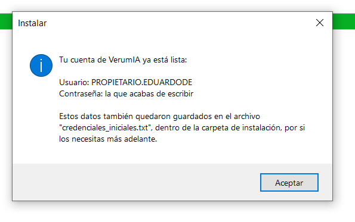
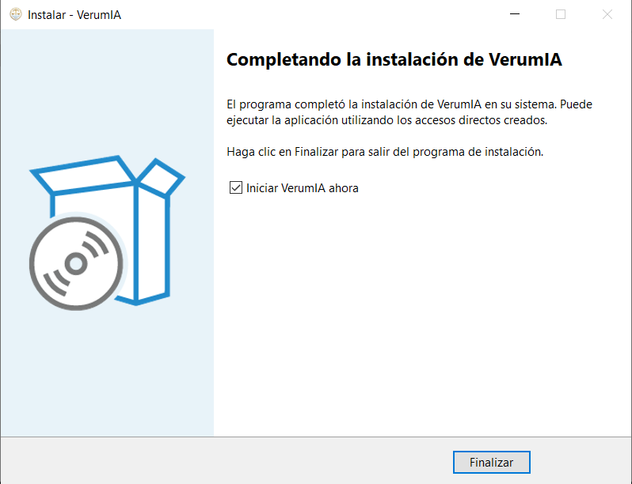

Tu descarga ya empezó sola. Estos son los pasos normales para abrir el instalador en Windows — ningún aviso que veas es un error, es lo esperado la primera vez que se instala un programa nuevo que todavía no tiene firma digital de Microsoft.
VerumIA-Setup-1.3.1.exe pesa cerca de 420 MB — según tu conexión, puede tardar algunos minutos. Como es un instalador nuevo y todavía poco descargado, Chrome o Edge pueden mostrar un aviso antes de guardarlo ("no se descarga con frecuencia" o similar) -- es un aviso genérico para cualquier instalador poco común, no algo específico de VerumIA. Haz clic en "Conservar" / "Mantener" / "Descargar de todas formas" (el texto varía entre navegadores).
Al hacer doble clic en el archivo descargado, Windows Defender SmartScreen muestra esta ventana porque el instalador es de un desarrollador independiente, todavía sin firma digital de pago de Microsoft:

Haz clic en "Más información" — la ventana se expande y aparece un botón nuevo:

Haz clic en "Ejecutar de todas formas". Este paso solo aparece la primera vez que se ejecuta el instalador en tu equipo.
Es un instalador estándar de Windows (Inno Setup). Estas son las pantallas que vas a ver, en orden:

Déjala tal cual (recomendado) o cámbiala con "Examinar..." si prefieres otra ubicación.

Escribe tu nombre, apellido y una contraseña -- con eso se arma tu usuario de acceso (ej. "PROPIETARIO.JUANPEREZ"). Anota o memoriza bien la contraseña: si la olvidas, no hay forma de recuperarla, solo de restablecerla con otra cuenta que tenga privilegios suficientes.

La casilla de Inteligencia Artificial local (Ollama + modelo gemma4:12b, ~9GB) es opcional y viene sin marcar. Si no la marcas, VerumIA queda instalado y funcional igual, usando proveedores de IA en la nube hasta que decidas instalar IA local después desde Configuración → Proveedores de IA. Si la marcas, la primera instalación va a tardar más (descarga varios GB) -- es normal, solo pasa una vez.



Al terminar, un aviso muestra el usuario que se generó y confirma tu contraseña -- guarda este dato, lo vas a necesitar para iniciar sesión (también queda guardado en "credenciales_iniciales.txt", dentro de la carpeta de instalación).

Deja marcado "Iniciar VerumIA ahora" y haz clic en Finalizar. VerumIA queda disponible en el menú Inicio y con un ícono en el escritorio para la próxima vez.

VerumIA se abre solo en tu navegador. Inicia sesión con el usuario y la contraseña que acabas de crear -- tu período de prueba gratuita de 7 días arranca automáticamente, sin que tengas que pegar ninguna clave de activación. Al vencer, la app te pide contactar a tu proveedor para pasar a una licencia paga.
Escríbenos por WhatsApp y te acompañamos en el proceso.